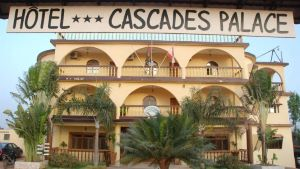
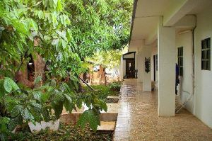
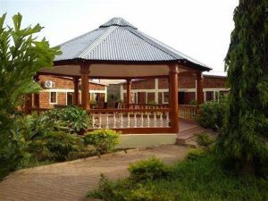
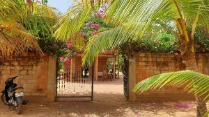

Quelques images des meilleurs hotels pour un bon séjour dans la ville de Banfora
Cliquez Sur l'image De Votre Choix Pour passer à la reservation de votre Hotel

Cascade Palace
Hôtel bien placé et facile d’accès. Le lieu est calme et assez verdoyant. L’équipement est acceptable comparé aux hôtels de la région, avec piscine, salle de réunion et une petite salle de sports entre autre.
Avec beaucoup d'espace, on y est bien que l'on soit en voyage d'affaire ou en famille. La Piscine permet de vous détendre et un petit air de jeux pour enfant occupe les enfant s'ils sont avec nous. La cuisine est bonne et les prix abordables.

Hotel Canne à sucre
Situé à Banfora, l'hotel Canne à sucre propose des hébergements avec une terrasse ou un balcon, une connexion Wi-Fi gratuite, une télévision à écran plat et un bar.
La salle de bains privative est pourvue d'un bidet et d'articles de toilette gratuits.
Un service de location de voitures est assuré sur place.

Hotel Plaza
Offrant un grand confort et un excellent rapport qualité-prix, il propose un large éventail de services conçus pour les voyageurs comme vous. Les chambres de l'Hotel Comoe sont dotées d'une climatisation. Un parking gratuit est à la disposition des voyageurs véhiculés, Vous ne serez jamais à court de choses à faire dans les environs : explorez les cascades célèbres telles que Karfiguela. L'Hotel Comoe fait de votre confort et de votre satisfaction une priorité absolue. L'établissement est impatient de vous accueillir à Banfora.

Hôtel Calypso
Cases rondes en guise de chambre avec au choix climatisation ou ventilateur ou dortoir de 6 personnes. Hôtel plutôt propre avec un très beau jardin bien entretenu. Petit déjeuner simple.
Excellent rapport qualité prix